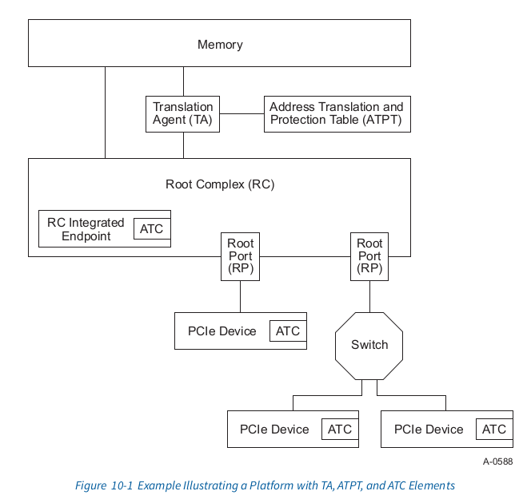
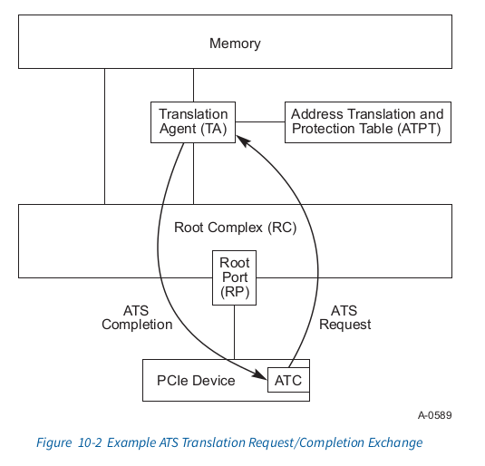
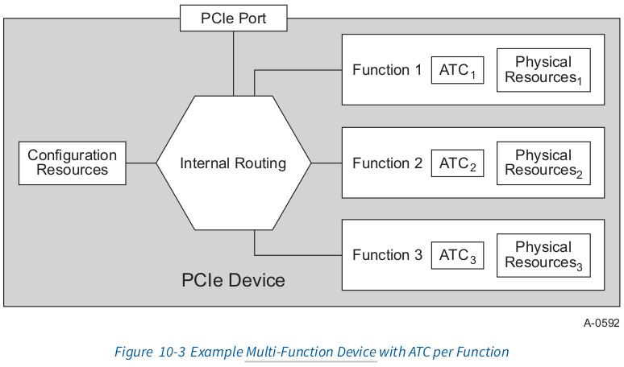
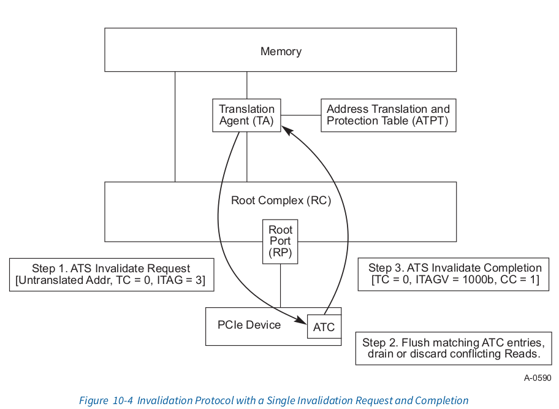

ats
ATS Specification
10.1 ATS Architectural Overview
Most contemporary system architectures make provisions for translating addresses from DMA (bus mastering) I/O Functions. In many implementations, it has been common practice to assume that the physical address space seen by the CPU and by an I/O Function is equivalent. While in others, this is not the case. The address programmed into an I/O Function is a “handle” that is processed by the Root Complex (RC). The result of this processing is often a translation to a physical memory address within the central complex. Typically, the processing includes access rights checking to insure that the DMA Function is allowed to access the referenced memory location(s).
大部分现代系统架构对I/O Functions 的DMA (bus mastering)的地址转换作了规定. 在 许多实现中, 通常的做法是假定CPU 和I/O Fucntions看到的是相同的物理地址空间. 而 在其他情况下并非如此. 编程到 I/O Function 中的地址是一个由 Root Complex 处理的 ‘句柄’. 这种处理的结果通常是将其转换为 central complex 内的物理内存地址。通常， 这个处理包括访问权限检查，以确保 DMA Function 被允许访问引用的内存位置。
The purposes for having DMA address translation vary and include:
- Limiting the destructiveness of a “broken” or miss-programmed DMA I/O Function
- Providing for scatter/gather
- Ability to redirect message-signaled interrupts (e.g., MSI or MSI-X) to different address ranges without requiring coordination with the underlying I/O Function
- Address space conversion (32-bit I/O Function to larger system address space)
- Virtualization support
进行DMA address translation的不同的目的包括
- 限制”broken”或者误编程的DMA I/O Function的破坏性
- 提供给 scatter/gather使用
- 能够将message-signaled interrupts(例如:MSI/MSIx)重定向到不同的
- 地址范围,并且不需要和下层的I/O Function协调
- 地址空间的转换(将32-bit I/O Function转换成更大的系统地址空间)
- 虚拟化支持
- destructiveness: 破坏性，毁灭性
Irrespective of the motivation, the presence of DMA address translation in the host system has certain performance implications for DMA accesses.
不管动机如何, 主机系统中的DMA address translation的存在会造成DMA access时有一 定的性能影响
irrespective: 无论, 不考虑
Depending on the implementation, DMA access time can be significantly lengthened due to the time required to resolve the actual physical address. If an implementation requires access to a main-memory-resident translation table, the access time can be significantly longer than the time for an untranslated access. Additionally, if each transaction requires multiple memory accesses (e.g., for a table walk), then the memory transaction rate (i.e., overhead) associated with DMA can be high.
根据实现情况,DMA access的时间会因为解析实际的物理地址而显著增长. 如果实现中需 要访问main-memory-resident(主存中驻留)的地址转换表, 访问的时间可能比不经过翻译 的访问时间长的多.此外,如果每个transaction需要 multiple memory access(例如 for a table work), 则和DMA相关的内存事务率(即开销) 可能会很高
To mitigate these impacts, designs often include address translation caches in the entity that performs the address translation. In a CPU, the address translation cache is most commonly referred to as a translation look-aside buffer (TLB). For an I/O TA, the term address translation cache or ATC is used to differentiate it from the translation cache used by the CPU.
为了减轻这些影响, 设计时通常在执行地址转换的实体中包含地址转换缓存. 在CPU 中, 地址转换缓存最常见之的是 translation look-aside buffer(TLB). 对于I/O TA, 使用 术语address translation cache 或者ATC 来区分CPU使用的地址转换缓存
entity: 实体
While there are some similarities between TLB and ATC, there are important differences. A TLB serves the needs of a CPU that is nominally running one thread at a time. The ATC, however, is generally processing requests from multiple I/O Functions, each of which can be considered a separate thread. This difference makes sizing an ATC difficult depending upon cost models and expected technology reuse across a wide range of system configurations.
虽然对于TLB和ATC之间有一些相似点, 但是也有很大的不同之处. 一个翻译后备缓冲区 （TLB）满足CPU的需求，CPU通常一次运行一个线程。而ATC通常处理来自于muliple I/O Functions,他们中的每个都可以被认为是一个单独的thread. 这种差异使得根据成本模型 和预期技术在各种系统配置中重复使用的情况下，确定地址转换缓存（ATC）的大小变得 困难。
The mechanisms described in this specification allow an I/O Device to participate in the translation process and provide an ATC for its own memory accesses. The benefits of having an ATC within a Device include:
- Ability to alleviate TA resource pressure by distributing address translation caching responsibility (reduced probability of “thrashing” within the TA)
- Enable ATC Devices to have less performance dependency on a system’s ATC size
- Potential to ensure optimal access latency by sending pretranslated requests to central complex
本规范中描述的机制允许I/O设备参与地址转换过程，并为其自身的内存访问提供地址转 换缓存（ATC）。在设备内部拥有ATC的好处包括: 在Device中有ATC的好处包括:
- 能够通过分配address trasnlation cache(ATC)责任来缓解 TA资源方面的压力(减少TA中的”thrashing(抖动)”的可能性)
- 使ATC devices减少对系统ATC size的性能依赖
- 通过将预翻译的请求发送到 central complex ，确保最佳访问延迟的潜力。
This specification will provide the interoperability that allows PCIe Devices to be used in conjunction with a TA, but the TA and its Address Translation and Protection Table (ATPT) are treated as implementation-specific and are outside the scope of this specification. While it may be possible to implement ATS within other PCIe Components, this specification is confined to PCIe Devices and PCIe Root Complex Integrated Endpoints (RCiEPs).
本规范将提供互操作性，使PCIe设备能够与翻译代理（TA）一起使用，但TA及其地址转换 和保护表（ATPT）被视为特定于实现的内容，不在本规范的范围之内。虽然可以在其他的 PCIe 组件中实现ATS, 但是本规范仅限于PCIe Devices和PCIe Root Complex Integrated Endpoints. (RCiEPs)
Figure 10-1 illustrates an example platform with a TA and ATPT, along with a set of PCIe Devices and RC Integrated Endpoints with integrated ATC. A TA and an ATPT are implementation-specific and can be distinct or integrated components within a given system design.
图10-1举例说明了一个带有TA和ATPT的平台, 并带有一些PCIe Devices和RC Integrated Endpoints with integrated ATC.TA和ATPT是 implementation-specific并且在给定的系统 设计中是不同的或者集成的组件

总结:
- 在现代架构中, CPU 和 I/FUNCTIONS 可能因为IOMMU 组件做DMA address translation, 导致两者view 不同
- DMA address translation 有很多好处，其中一点是虚拟化
- DMA address translation 会带来很多额外的开销，就像CPU 的page table walk一样, 所以本章节主要是定义了一套规范, 来实现类似于CPU 侧的TLB。具体的方法是:
- PCIe endpoint 硬件提供address translation cache
- 通过下面章节中描述的协议来完成该cache的同步
10.1.1 Address Translation Services (ATS) Overview
The ATS chapter provides a new set of TLP and associated semantics. ATS uses a request-completion protocol between a Device1 and a Root Complex (RC) to provide translation services. In addition, a new AT field is defined within the Memory Read and Memory Write TLP. The new AT field enables an RC to determine whether a given request has been translated or not via the ATS protocol.
ATS这个章节提供了一组新的TLP和相关的概念.ATS在Device[1]和Root Complex(RC)之间 使用一种request-completion协议来确保 translation services. 此外,在Memory Read 和 Memory Write TLP中提供了一个新的AT字段. 这个新的AT字段使RC 确定给定的 request是否通过ATS协议进行了translate
Figure 10-2 illustrates the basic flow of an ATS Translation Request operation
Figure 10-2 描述了ATS Translation Request主要的操作流程

In this example, a Function-specific work request is received by a single-Function PCIe Device. The Function determines through an implementation-specific method that caching a translation within its ATC would be beneficial. There are a number of considerations a Function or software can use in making such a determination; for example:
Memory address ranges that will be frequently accessed over an extended period of time or whose associated buffer content is subject to a significant update rate
Memory address ranges, such as work and completion queue structures, data buffers for low-latency communications, graphics frame buffers, host memory that is used to cache Function-specific content, and so forth
在这个示例中，single-function PCIe Device 接收到一个 Function-specific 工作请 求。该 single-function 通过一种实现特定的方法确定在其 ATC 中缓存一个转换是有益 的。在做出这种判断时，single-function 或软件可以考虑多个因素；例如：
- 该内存地址段在一段时间内被频繁访问,或者相关的buffer内容处于一个很高的更新频 率
- 该内存地址段是例如工作和完成队列数据结构,低延迟通信的data buffers, 图形帧缓 冲区用于缓存 Function-specific内容的内存等等
The Function generates an ATS Translation Request which is sent upstream through the PCIe hierarchy to the RC which then forwards it to the TA. An ATS Translation Request uses the same routing and ordering rules as defined in this specification. Further, multiple ATS Translation Requests can be outstanding at any given time; i.e., one may pipeline multiple requests on one or more TC. Each TC represents a unique ordering domain and defines the domain that must be used by the associated ATS Translation Completion.
Function生成了一个ATS Translation Request, 该 Request发送到upstream,该过程通过 PCIe 层级到RC, 该RC接下来将转发到TA. 该ATS Translation Request使用和本规范中定 义的相同的routing 和 ordering 规则. 此外，在任何给定时间可以存在多个 ATS 转换 请求；例如,一个 pipeline multiple requests可能需要一个或多个TC.每个TC代表一个 唯一的顺序域, 并定义关联的ATS翻译完成必须使用的域即，可以在一个或多个传输通道 （TC）上对多个请求进行流水线处理。每个 TC 代表一个唯一的排序域，并定义与之相关 的 ATS 转换完成所必须使用的域。
- further: 此外, 通常用于表示更进一步的内容、额外的信息或更深层次的解释
- outstanding: 未解决的, 未处理的
总结:
- ATS 在Device 和 RC 之间定义了一个 request-competion 的一个协议, 另外, Memory Read/Write 相关的TLP 中也新增了一个AT字段
- 往往需要设备来判断哪些request需要用ATS。（往往是一些访问频繁的，或者对 延迟要求较高的)
- 关于这些新增加的 ATS translation request, 其路由和排序规则和其他TLP一样。 另外，TA这边会pipeline 多个 request，这些request 被 分到不同的TC中，每个 TC是一个ordering domain.
Upon receipt of an ATS Translation Request, the TA performs the following basic steps:
- Validates that the Function has been configured to issue ATS Translation Requests.
- Determines whether the Function may access the memory indicated by the ATS Translation Request and has the associated access rights.
- Determines whether a translation can be provided to the Function. If yes, the TA issues a translation to the Function.
- ATS is required to support a variety of page sizes to accommodate a range of ATPT and processor implementations.
- Page sizes are required to be a power of two and naturally aligned.
- The minimum supported page size is 4096 bytes. ATS capable components
- A Function must be informed of the minimum translation or invalidate size it will be required to support to provide the Function an opportunity to optimize its resource utilization. The smallest minimum translation size must be 4096 bytes.
- ATS is required to support a variety of page sizes to accommodate a range of ATPT and processor implementations.
The TA communicates the success or failure of the request to the RC which generates an ATS Translation Completion and transmits via a Response TLP through a RP to the Function.
- An RC is required to generate at least one ATS Translation Completion per ATS Translation Request;i.e., there is minimally a 1:1 correspondence independent of the success or failure of the request.
- A successful translation can result in one or two ATS Translation Completion TLPs per request. The Translation Completion indicates the range of translation covered.
- An RC may pipeline multiple ATS Translation Completions; i.e., an RC may return multiple ATS Translation Completions and these ATS Translation Completions may be in any order relative to ATS Translation Requests.
- The RC is required to transmit the ATS Translation Completion using the same TC (Traffic Class) as the corresponding ATS Translation Request.
- The requested address may not be valid. The RC is required to issue a Translation Completion indicating that the requested address is not accessible.
- An RC is required to generate at least one ATS Translation Completion per ATS Translation Request;i.e., there is minimally a 1:1 correspondence independent of the success or failure of the request.
当收到一个ATS Translation Request, TA 执行下面的主要步骤:
- 验证这个Function已经被配置为 可以提交 ATS Translation Requests.
- 确定 Function 是否可以访问 ATS Translation Request 指示的内存并具有相关的访 问权限。
- 确定可以向该Function 提供 translation. 如果可以, TA 将为该Function 提交一个 translation
- ATS 需要支持各种页面大小以适应一系列 ATPT(Address Translation and Page Table) 和处理器实现。
- 页面大小必须是2的幂,并自然对齐
- 支持的page size的最小值是4096字节. ATS capable 组件需要支持此最小页面 的大小
- 必须告知功能它需要支持的最小translation/invalidate 大小，以便为function 提供优化其资源利用的机会。最小的转换大小必须为 4096 字节。
TA需要告诉RC 该请求的结果是成功还是失败, 该RC会产生一个ATS Translation Completion并且通过RP(root port??) 向Fucntion发送一个 Response TLP
- RC需要为每个ATS Translation Request 生成至少一个ATS Translation Completion; 也就是说, 至少存在1:1的对应关系, 与request的成功失败无关
- 一个成功执行的translation可以为每个request回应一条或两条 ATS Translation Completion. Translation Completion表明了 translation 的范 围.
RC 可以对多个 ATS 转换完成进行流水线处理；即，RC 可以返回多个 ATS Trnaslation Completion，这些 ATS Translation Completion 相对于 ATS Translation Request 可以是任意顺序。
- RC 必须使用与相应的 ATS Translation Request 相同的 TC来传输 ATS Translation Completion.
- 请求的地址可能无效。RC 必须发出一个 Translation Completion，指示请求的地 址不可访问。
When the Function receives the ATS Translation Completion and either updates its ATC to reflect the translation or notes that a translation does not exist. The Function proceeds with processing its work request and generates subsequent requests using either a translated address or an untranslated address based on the results of the Completion.
- Similar to Read Completions, a Function is required to allocate resource space for each completion(s) without causing backpressure on the PCIe Link.
- A Function is required to discard Translation Completions that might be “stale”. Stale Translation Completions can occur for a variety of reasons.
当一个Function收到了ATS Translation Completion并且更新了这个translation 对应的 ATC或者发现这个translation不存在. (TA page table work broken). 该 Function 继 续处理他的工作请求并且接下来产生的请求根据 Completion的结果使用已经翻译过的地 址或者未翻译的地址
- 和Read Completions相似, Function需要在当前PCIe link不产生backpressure 的情况 下, 为每个compleions分配resource space
- Function 需要丢弃已经”stale”(实效的)Translation Completions. Stale translation Completion可能由于不同的原因产生
As one can surmise, ATS Translation Request and Translation Completion processing is conceptually similar and, in many respects, identical to PCIe Read Request and Read Completion processing. This is intentional to reduce design complexity and to simplify integration of ATS into existing and new PCIe-based solutions. Keeping this in mind, ATS requires the following:
- ATS capable components must interoperate with [PCIe-1.1] compliant components.
- ATS is enabled through a new Capability and associated configuration structure. To enable ATS, software must detect this Capability and enable the Function to issue ATS TLP. If a Function is not enabled, the Function is required not to issue ATS Translation Requests and is required to issue all DMA Read and Write Requests with the TLP AT field set to “untranslated”.
- ATS TLPs are routed using either address-based or Requester ID (RID) routing.
- ATS TLPs are required to use the same ordering rules as specified in this specification.
- ATS TLPs are required to flow unmodified through [PCIe-1.1] compliant Switches.
- A Function is permitted to intermix translated and untranslated requests.
- ATS transactions are required not to rely upon the address field of a memory request to communicate additional information beyond its current use as defined by the PCI-SIG.
可以推测，ATS 翻译请求和翻译完成的处理在概念上与 PCIe Read Request 和 Read completion 的处理相似，并且在许多方面是相同的。这种设计是有意为之，以降低设计 复杂性并简化 ATS 在现有和新的基于 PCIe 的解决方案中的集成。考虑到这一点，ATS 要求如下：
- 支持 ATS 的组件必须能够与符合 [PCIe-1.1] 标准的组件进行互操作。
ATS 需要通过一个新的 Capability 和相关的configuration structure 来启用该功能. 为了enable ATS, 软件必须识别这个 Capability 并且使能该 Function 来提交 ATS TLP. 如果一个Function 没有 enable, Function 不能提交 ATS Translation Request 并且提交的 DMA Read 和 Write Request 的TLP 中的AT field 需要设置成 “untranslated”
- ATS TLPs 可以通过 address-based 或者 Requester ID (RID) 路由
- ATS TLPs 需要 未经修改的通过[PCIe-1.1] compliant Switches.
- Function 允许去混合 translated 和 untranslated request
- 要求 ATS translation 不依赖内存请求的地址字段传递当前PCI-SIG之外 的额外信息
IMPLEMENTATION NODE
Adress Range Overlap
It is likely that the untranslated and translated address range will overlap, perhaps in their entirety. This is not a requirement of ATS but may be an implementation constraint on the TA so that memory requests will be properly routed.
未翻译和已翻译的地址范围很可能会重叠，甚至可能完全重叠。这并不是 ATS 的要 求，但可能是 TA（翻译代理）在实现上的限制，以确保内存请求能够被正确路由。
In contrast to the prior example, Figure 10-3 illustrates an example Multi-Function Device. In this example Device, there are three Functions. Key points to note in Figure 10-3 are:
Each ATC is associated with a single Function. Each ATS-capable Function must be able to source and sink at least one of each ATS Translation Request or Translation Completion type.
Each ATC is configured and accessed on a per Function basis. A Multi-Function Device is not required to implement ATS on every Function.
If the ATC implementation shares resources among a set of Functions, then the logical behavior is required to be consistent with fully independent ATC implementations.
对比前一个例子, Figure 10_3 举例说明了一个Multi-Function Device. 在这个例子中 的Device, 有三个Functions. Figure 10-3 需要注意的关键点如下:
- 每个ATC和一个单独的Function相关. 每个ATS-capable Function 必须能够去source and sick至少 ATS Translation Request 或 Translation Completion 一种
每个ATC都基于每个Function进行配置和访问. 一个 Multi-Function设备不需要在每个 Function上
- 如果 ATC 实现在一组功能之间共享资源，则逻辑行为需要与完全独立的 ATC 实现一致。

Independent of the number of Functions within a Device, the following are required:
- A Function is required not to issue any TLP with the AT field set unless the address within the TLP was obtained through the ATS Translation Request and Translation Completion protocol.
- Each ATC is required to only be populated using the ATS protocol; i.e., each entry within the ATC must be filled via an ATS Translation Completion in response to the Function issuing an ATS Translation Request for a given address.
- Each ATC cannot be modified except through the ATS protocol. That is:
- Host system software cannot modify the ATC other than through the protocols defined in this specification except to invalidate one or more translations in an ATC. A Device or Function reset would be an example of an operation performed by software to change the contents of the ATC, but a reset is only allowed to invalidate entries not modify their contents.
- It must not be possible for host system software to use software executing on the Device to modify the ATC.
无论设备中有多少个 Function，都需要满足以下要求:
Function不需要提交带有AT字段的TLP除非这个TLP中的address通过 ATS Translation Request 和Translation Completion 协议获取过
- ATC必须仅通过 ATS 协议进行填充；也就是说，ATC 中的每个条目都必须通过 ATS 翻译完成来填充，这是对 Function 发出的特定地址的 ATS 翻译请求的响应
- 每一个ATC 不能被修改,除非通过ATS protocol.
- Host 系统软件只能通过该规范中的定义的协议来修改ATC, 除非去invalidate 一个 或多个ATC中的 translations. Device 或者Function Reset操作将会是一个由 software 去改变ATC内容的例子,但是reset操作只能能允许去invalidate entries 但是不能modify他们的内容
- 主机系统软件不能通过在设备上运行的软件来修改ATC。
When a TA determines that a Function should no longer maintain a translation within its ATC, the TA initiates the ATS invalidation protocol. The invalidation protocol consists of a single Invalidation Request and one or more Invalidate Completions.
当TA判定某个功能不应再在其ATC中维护某个translation时，TA 会启动 ATS Invalidation protocol invailidation. invailidate protocol 由一个 Invalidation Request 和一个或多个 Invalidate Completions组成

As Figure 10-4 illustrates, there are essentially three steps in the ATS Invalidation protocol:
如10-4图所示, ATS Invalidate protocol 基本上包含三个步骤
The system software updates an entry in the tables used by the TA. After the table is changed, the TA determines that a translation should be invalidated in an ATC and initiates an Invalidation Request TLP which is transmitted from the RP to the example single-Function Device. The Invalidate Request communicates an untranslated address range, the TC, and an RP unique tag which is used to correlate Invalidate Completions with the Invalidation Request.
system software更新了一个entry, 而这个entry恰好被TA使用. 在这个table被改变 后,TA判定对应的translation应该在ATC中被 invailidated并且发起一个 Invalidation Request TLP,该TLP从 RP传达到例子中的single-Function Device.该 Invalidate Request 传递了一个 untranslated address range, TC, 和一个 RP unique tag, 该tag用来把 Invalidate Completions 和 Invalidation Request 关联 起来
The Function receives the Invalidate Request and invalidates all matching ATC entries. A Function is not required to immediately flush all pending requests upon receipt of an Invalidate Request. If transactions are in a queue waiting to be sent, it is not necessary for the Function to expunge requests from the queue even if those transactions use an address that is being invalidated.
该function收到了Invalidate Request并且无效了所有对应的ATC entries. 在收到 Invalidate Request 后, function 不需要立即flush 所有pending的 requests.如果 一个 transactions 正在队列中等待发送, 则该function没有必要从队列中删除请求, 即使这些事务使用的address正在被 invailidated
A Function is required not to indicate the invalidation has completed until all outstanding Read Requests or Translation Requests that reference the associated translated address have been retired or nullified.
A Function 必须确保，只有在所有引用相关翻译地址的未完成 Read Requests 或 Translation Requests 都已完成或取消后，才能指示invalidation 已经完成。
A Function is required to ensure that the Invalidate Completion indication to the RC will arrive at the RC after any previously posted writes that use the “stale” address.
Function需要保证 发送到RC的 Invalidate Completion 到达RC之前, 之前任何的 posted writes都必须使用 “stale”(老的,旧的) 地址
When a Function has ascertained that all uses of the translated address are complete, it issues one or more ATS Invalidate Completions.
当该function 确定了所用这个translated address相关请求都已经complete, 他会提 交1个或多个ATS Invalidate Completions
An Invalidate Completion is issued for each TC that may have referenced the range invalidated. These completions act as a flush mechanism to ensure the hierarchy is cleansed of any in-flight transactions which may contain references to the translated address.
为每个引用了无效范围的TC发出 Invalidate Completion. 这些 completions 充当 了一个flush 机制来保证 hierarchy已经清除了任何可能包含translated address 的正在处理的事物
The number of Completions required is communicated within each Invalidate Completion. A TA or RC implementation can maintain a counter to ensure that all Invalidate Completions are received before considering the translation to no longer be in use.
每个Invalidate Completion 都会包含Completions的数量.TA或者RC的实现中会包 含一个计数器来确保在认为这个translation 没有人在使用之前, 所有的 Invalidate Completions都已经收到.
If more than one Invalidation Complete is sent, the Invalidate Completion sent in each TC must be identical in the fields detailed in Section 10.3.2 .
如果多个 Invalidate Complete 发出, 每个TC 发出的Invalidate Completion 需 要和 Section 10.3.2中描述的字段保持一致
An Invalidate Completion contains the ITAG from Invalidate Request to enable the RC to correlate Invalidate Requests and Completions.
Invalidate Completion 中包含来自于 Invalidate Request 中的ITAG 来保证 RC可 以将这些 Invalidate Request和 Completion 联系起来
10.1.2 Page Request Interface Extension
ATS improves the behavior of DMA based data movement. An associated Page Request Interface (PRI) provides additional advantages by allowing DMA operations to be initiated without requiring that all the data to be moved into or out of system memory be pinned. The overhead associated with pinning memory may be modest, but the negative impact on system performance of removing large portions of memory from the pageable pool can be significant.
ATS 改善了基于 DMA 的数据移动行为。相关的页面请求接口（PRI）通过允许在不需要将 所有数据固定到系统内存中的情况下启动 DMA 操作，提供了额外的优势。(感觉这里是说, 不需要所有的内存请求的地址都是 present的). pinning memory相关的开销可能不明显, 但是从pageable pool 中删除大量的内存对系统性能负面影响可能很大.
Page able????
PRI is functionally independent of the other aspects of ATS. That is, a device that supports ATS need not support PRI, but PRI is dependent on ATS’s capabilities.
PRI 在功能方面是独立于 ATS 其他部分. 展开来说, 一个设备支持ATS 不一定支持PRI, 但是 PRI 依赖 ATS的capabilitis
Intelligent I/O devices can be constructed to make good use of a more dynamic memory interface. Pinning will always have the best performance characteristics from a device’s perspective-all the memory it wants to touch is guaranteed to be present. However, guaranteeing the residence of all the memory a device might touch can be problematic and force a sub-optimal level of device awareness on a host. Allowing a device to operate more independently (to page fault when it requires memory resources that are not present) provides a superior level of coupling between device and host.
可以构建智能 I/O 设备以充分利用更动态的内存接口。从设备的全视角来看, Pining 总是会有更高的性能特性 -- 该设备想要touch 的内存需要保证present. 但是, 保证设备可能touch的所有内存都present可能是有问题的,并且会对host device awareness 水平强制处于 sub-optimal. 允许设备操作来更加独立(当他 需要的内存资源不是present的时候,会触发一个page fault)在设备和主机之间 提供了更高级别(更良好)的耦合. (降低了耦合性, 或者说host对于device不需 要增加一些特殊的管理了)The mechanisms used to take advantage of a Page Request Interface are very device specific. As an example of a model in which such an interface could improve overall system performance, let us examine a high-speed LAN device. Such adevice knows its burst rate and need only have as much physical buffer space available for inbound data as it can receive within some quantum. A vector of unpinned virtual memory pages could be made available to the device, that the device then requests as needed to maintain its burst window. This minimizes the required memory footprint of the device and simplifies the interface with the host, both without negatively impacting performance.
利用 Page Request Interface 的机制实现是非常特定于设备的. 让我们来 参考一个高速的LAN 设备, 作为例子模型来展示像这样的一个接口可以提高系统 整体的性能.这样的一个设备指导它的burst rate(突发速率,最大速率)并且只 需要为在一定范围内它可以接受的数据提供尽可能多的物理buffer空间. 可以向 设备提供一个不固定的虚拟内存页的vector(也就是所有的page不一定是pinned, 可能不是present，可能present，但是指向的physical page不同)， 之后设备 需要维护他的 burst windows. 这将最小化设备所需的内存占用，简化与主机 的接口，并且两者不会产生性能方面的负面影响.The ability to page, begs the question of page table status flag management. Typical TAs associate flags (e.g., dirty and access indications) with each untranslated address. Without any additional hints about how to manage pages mapped to a Function, such TAs would need to conservatively assume that when they grant a Function permission to read or write a page, that Function will use the permission. Such writable pages would need to be marked as dirty before their translated addresses are made available to a Function.
对于page来说，该 ability回避了page table status flag 管理的问题。 典型的TA 会将flags(eg. dirty && access 标志位)和每个未翻译的address 联系起来。如果没有关于如何管理映射到function页面的额外的指示, 这些TAs 需要谨慎的假设当他们授予一个function去读写一个page 权限, 这些function 将会使用这些权限.(当function 去write, 那么认为该page就有write的权限). 这些可写页面需要在translated address 提供给function之前, 需要标记成 脏页This conservative dirty-on-write-permission-grant behavior is generally not a significant issue for Functions that do not support paging, where pages are pinned and the cost of saving a clean page to memory will seldom be paid. However, Functions that support the Page Request Interface could pay a significant penalty if all writable pages are treated as dirty, since such Functions operate without pinning their accessible memory footprints and may issue speculative page requests for performance. The cost of saving clean pages (instead of just discarding them) in such systems can diminish the value of otherwise attractive paging techniques. This can cause significant performance issues and risk functional issues in circumstances where the backing store is unable to be written, such as a CD-ROM.
对于不支持paging的function来说, 保守的 dirty-on-write-permission-grant行为 通常不会是一个重要问题, 其中固定页面在保存clean page到内存中将花费很少 代价. 但是支持 Page Request Interface 的function可能会付出比较大的代价 ,如果所有的可写入的page都被对待为dirty的话,因为这些function不会固定他们要 访问的内存空间并且可能会有一些预测性质的 page request 来提高性能(预读). 在无法写入后段存储(例如 CD-ROM) 的情景下, 可能会导致严重的性能问题 以及可能会造成一些安全问题(risk functional issues)The No Write (NW) flag in Translation Requests indicates that a Function is willing to restrict its usage to only reading the page, independent of the access rights that would otherwise have been granted.
Translation Requests NO Write (NW) flag 表明function将其使用限制 为仅读取页面，而与原本授予的访问权限无关。If a device chooses to request only read access by issuing a Translation Request with the NW flag Set and later determines that it needs to write to the page, then the device must issue a new Translation Request.
如果 device 通过发出带有 NW flag 的 Translation Request 来提交只读请求 ,然而之后决定需要去写这个page, 这样的话,device 必须发出一个新的 Translation RequestUpon receiving a Translation Request with the NW flag Clear, TAs are permitted to mark the associated pages dirty. It is strongly recommended that Functions not issue such Requests unless they have been given explicit write permission. An example of write permission is where the host issues a command to a Function to load data from a storage device and write that data into memory.
当受到一个不带 NW flag的 Translation Request, TAs 允许去标记相关的 page 为dirty . 强烈建议function 不要发出这样的请求,除非他们已经获得了 明确的写入权限.写入权限的一个例子是, 当主机提交了给function一个 从 storage device 中 load data的cmd并且将该数据写入内存10.1.3 Process Address Space ID (PASID)
Certain TLPs can optionally be associated with a Process Address Space ID (PASID). This value is conveyed using the PASID TLP Prefix. The PASID TLP Prefix is defined in the Section 6.20 .
某些TLPs 可以选择性的带有 Process Address Space ID (PASID).该值 通过 PASID TLP Prefix(前缀)标识. PASID TLP Prefix 在Section 6.20 中定义The PASID TLP Prefix is permitted on:
- Memory Requests (including Untranslated AtomicOp Requests) with Untranslated Addresses
- Address Translation Requests
- Page Request Messages
- ATS Invalidation Requests
- PRG Response Messages
- 带有 Untranslated Adress Memory Requests(包括 Untranslated AtomicOp Requests)
- Address Translation Requests
- Page Request Messages
- ATS Invalidation Requests
- RPG Response Messages
Usage of the PASID TLP Prefix for Untranslated Memory Requests is defined in Section 6.20 . This section describes PASID TLP Prefix for the remaining TLPs.
对于 Untranslated Memory Requests使用 PASID TLP Prefix在 Section 6.20中定义. 该章节描述了其他 TLPs 中的PASID TLP PrefixWhen a Request does not have a PASID TLP Prefix, the Untranslated Address represents an address space associated with the Requester ID.
When a Request has a PASID TLP Prefix, the Untranslated Address represents an address space associated with both the Requester ID and the PASID value.
当一个Requset 不带有 PASID TLP Prefix, 这个 Untranslated Address 表示与 Requester ID相关的地址空间 当一个Request 带有 PASID TLP Prefix, 这个 Untranslated Address 表示 与Requester ID和PASID 值 相关的地址空间 (Requester ID + PASID --> request)When a Response has a PASID TLP Prefix, the PASID value reflects the address space associated the corresponding Request.
当一个 Response 带有 PASID TLP Prefix, 这个 PASID的值反映了 与其相应的请求相关的地址空间Each Function has an independent set of PASID values. The PASID field is 20 bits wide however the effective width is constrained by the lesser of the width supported by the Root Complex (TA) and the width supported by the Function (ATC). Unused upper bits of the PASID value must be 0b.
每个 function 都有一组独立的 PASID 值. PASID字段有20 bits宽, 但是 有效的宽度会被 Root Complex (TA) 和function (ATC) 限制的更短. PASID的没有使用的高bits位必须是0For Endpoints in systems where a Virtual Intermediary (VI) is present, Untranslated.
对于一个存在 Virtual Intermediary (VI) (VMM) 的Enpoints, 是 UntranslatedAddresses with an associated PASID are typically used to represent Guest Virtual Addresses (GVA) and Untranslated Addresses that are not associated with a PASID represent Guest Physical Addresses (GPA). The TA could be designed so that the VI manages the tables used to perform translations from GPA to Translated Addresses while the individual Guest Operating Systems manage tables used to perform translations from GVA to GPA. When translating an address with an associated PASID, the TA performs both translations and returns the resulting Translated Address (i.e., GVA to GPA followed by GPA to Translated Address). The intermediate GPA value is not visible to the ATC.
带有相关的 PASID 的address 通常用于标识 Guest Virtual Address (GVA), 不带 PASID 的 Untranslated Address标识 Guest Physical Address (GPA). TA这样设计以便 VI 管理用于执行从GPA 到 Translated Address 页表, 而独立的Guest 操作系统管理用于从GVA到 GPA的页表.当 转换一个带有 相关 PASID的地址, TA 执行 两种translations 并且返回 Translated Address (也就是说: GVA --> GPA 然后是 GPA --> Translated Address). 中间的GPA值对ATC不可见When an ATC invalidates a cached GPA mapping, it invalidates the GPA mapping and also invalidates all GVA mappings in the ATC. When the GPA invalidate completes, the VI can safely remove pages backing GPA memory range from a Guest Operating System. The VI does not need to know which GVA mappings involved the GPA mapping.